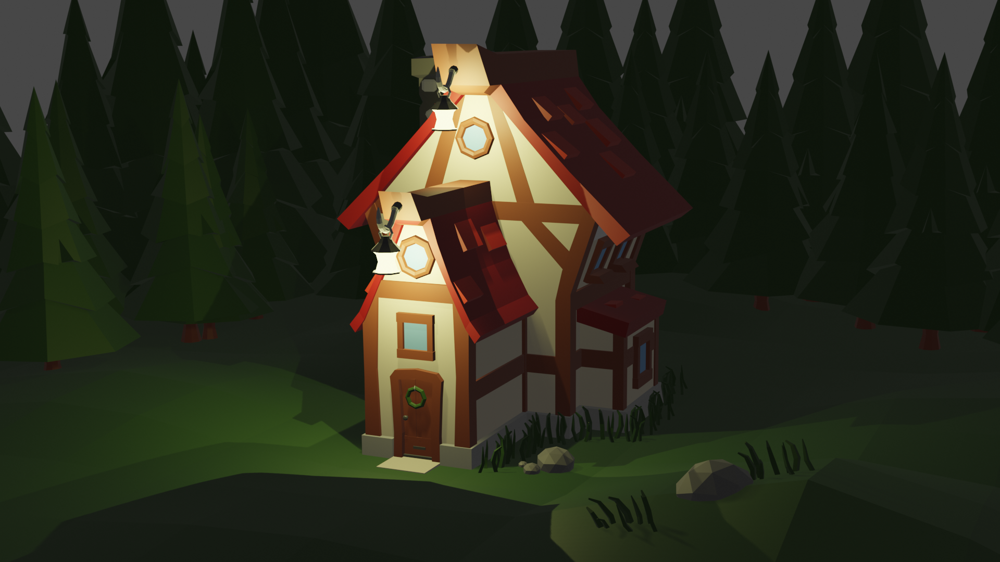

This is the third artwork in the series. It showcases my exploration into a more natural environment. The piece conveys a sense of eeriness and uncertainty, and it was created during a period of experimentation with different artistic techniques. I wanted to evoke a sense of exploration in the viewer with this artwork.